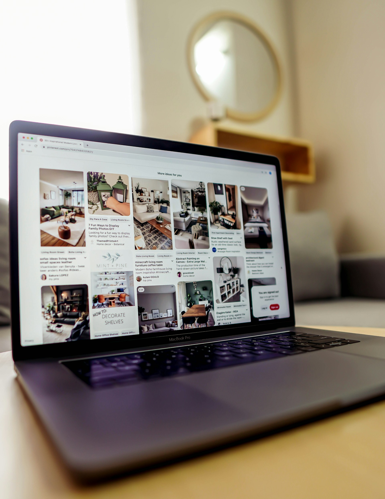
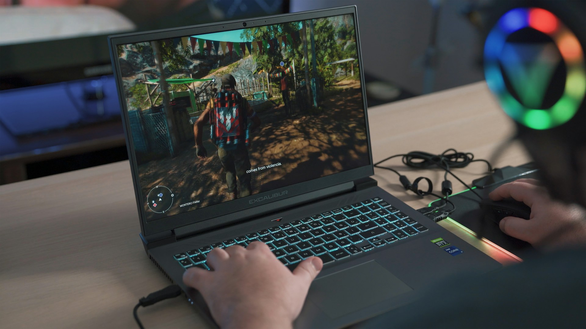

image of laptop from https://unsplash.com/s/photos/laptop
image of laptop from https://unsplash.com/s/photos/laptop
Choosing the right laptop can be a challenging task, especially with so many different models, specifications, and use cases to consider. Whether you're a student, a professional, a gamer, or someone who just needs a device for everyday tasks, the right laptop will depend on how you plan to use it.
This guide and attached laptop recommending chatbot will help you understand the key components of a laptop, such as the CPU, GPU, RAM, and storage, and explain how each of these affects performance in different scenarios. From productivity to gaming, and general browsing to battery life, we’ll break down what matters most so that you can make an informed decision, and purchase a laptop that is right for you.
Go to top
CPU
The central processing unit (CPU) is known as the brain of the laptop. It is responsible for executing software instructions and processing data. Processing speed refers to the number of cycles a CPU can perform per second, typically measured in gigahertz (GHz). For example, a CPU with a clock rate of 2.6GHz can perform 2.6 billion cycles per second. CPUs are typically categorized as 32-bit or 64-bit, indicating how much data they can handle at once and how much memory they can address.
GPU
The graphics processing unit (GPU) is a specialized processor designed to render images, videos, and animations. There are two main types of GPUs in laptops:
-
Integrated GPUs are built into the CPU, offering energy efficiency and space savings, suitable for basic tasks.
-
Dedicated GPUs are separate hardware components designed for more demanding applications like gaming, video editing, and 3D rendering.
RAM
Random access memory (RAM) is temporary memory that stores data being actively used. Its contents are erased when the device is powered off. Most laptops use SO-DIMM modules, which are smaller than desktop memory modules.
-
Entry-level laptops typically include 8GB of RAM, suitable for web browsing and light gaming.
-
Mid-range laptops often have 16GB, ideal for multitasking and running more demanding software.
-
High-end laptops may include 32GB or more, ideal for tasks like video editing, 3D modeling, and high-end gaming.
ROM
Read-only memory (ROM) is non-volatile memory, meaning its contents remain even when the laptop is powered off. ROM typically stores firmware and instructions needed during the startup process, helping the hardware communicate with the operating system.
HDD
A hard disk drive (HDD) stores data on spinning magnetic platters. It uses a mechanical arm to read and write data. While cost-effective and available in larger capacities, HDDs are slower and more prone to damage due to their moving parts.
SSD
A solid-state drive (SSD) uses flash memory to store data and has no moving parts. SSDs offer faster boot times, quicker file access, lower power consumption, and improved durability compared to HDDs. They are standard in most modern laptops.
Motherboard
The motherboard is the main circuit board of a laptop, connecting all the major components, including the CPU, RAM, GPU, storage devices, and input/output ports. It allows all parts of the laptop to communicate and function together.
Battery
Most laptops use rechargeable lithium-ion or lithium-polymer batteries. These batteries offer high energy density, long lifespan, and low self-discharge. The battery powers the laptop when it’s not connected to an external power source.
Go to top
Different uses for laptops
Depending on how you plan to use your laptop, certain hardware and software features will be more important than others. Whether it's for productivity, casual use, or gaming, choosing the right specifications can greatly improve your experience and ensure value for money.
Productivity
image of laptop from https://unsplash.com/s/photos/laptop
For tasks like office work, studying, or content creation, performance and reliability are key. A fast CPU (such as an Intel i5/i7 or AMD Ryzen 5/7) ensures smooth multitasking, while RAM in the range of 16GB or higher allows multiple programs and browser tabs to run without lag. Storage of 512GB to 1TB SSD is recommended, as it provides fast load times and ample space for files, software, and documents.
When it comes to operating systems:
-
Windows laptops are widely used for productivity due to compatibility with Microsoft Office (Word, Excel, PowerPoint) and a wide range of third-party applications.
-
MacBooks are often preferred by users in creative fields such as graphic design, video editing, or digital illustration. macOS offers optimized software for creatives (like Final Cut Pro, Logic Pro, and the Adobe suite), high-resolution Retina displays, and strong hardware—but they come at a premium price.
Additionally, a long battery life (8–12 hours) is useful for working on the go, especially if you're running demanding programs that can drain power quickly. A backlit keyboard and lightweight design may also enhance portability and comfort during long work sessions.
General browsing and everyday use

image of laptop from https://unsplash.com/s/photos/laptop
For everyday activities like browsing the internet, checking emails, streaming videos, and using social media, you don’t need powerful specs. A laptop with an entry-level dual-core CPU, 8GB of RAM, and 128GB–256GB SSD is typically sufficient. Because these tasks are not resource-heavy, battery life tends to last longer, and cooling demands are minimal.
One of the most budget-friendly and reliable options for this use case is a Chromebook. Chromebooks run on Chrome OS and are designed for web-based tasks. They boot quickly, have long battery life, and are usually more secure due to frequent automatic updates. Many Chromebooks come with cloud storage options like Google Drive, which reduces the need for large internal storage.
For users who prefer Windows, there are also many affordable Windows laptops in the £250–£500 range suitable for everyday use.
Gaming

image of laptop from https://unsplash.com/s/photos/laptop
Gaming performance requirements vary depending on the types of games you play:
Light Gaming:
If you're playing older or less graphically demanding games (e.g., Minecraft, Stardew Valley, or indie titles), a laptop with a mid-range CPU, 8GB–16GB RAM, and integrated graphics will suffice. These machines often overlap with productivity laptops and can be found in the £500–£700 range.
High-End Gaming
For AAA games or competitive esports titles (e.g., Call of Duty, Cyberpunk 2077, or Fortnite at ultra settings), you'll need:
-
A powerful multi-core CPU (e.g., Intel i7/i9 or AMD Ryzen 7/9)
-
At least 16GB of RAM (32GB for future-proofing)
-
A dedicated GPU, such as an NVIDIA RTX 3060/4070/4090 or AMD equivalents
-
High-refresh-rate display (120Hz to 240Hz) for smoother visuals
-
High-resolution screen (1440p or 4K) for immersive gameplay
-
Advanced cooling systems to handle thermal loads
High-end gaming laptops fall into the £1000–£3000+ range, depending on the specs. Enthusiast-level models may include 1TB+ SSD storage, RGB keyboards, ray tracing support, and other premium features. However, these laptops tend to be heavier and have shorter battery lives due to power-hungry components.
Go to top